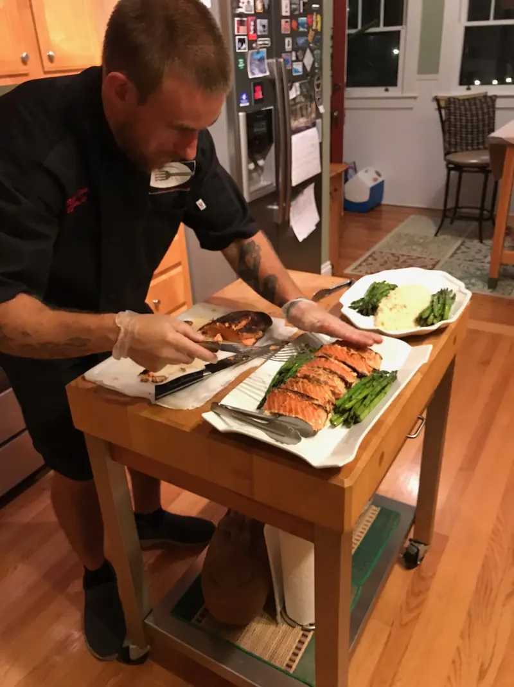
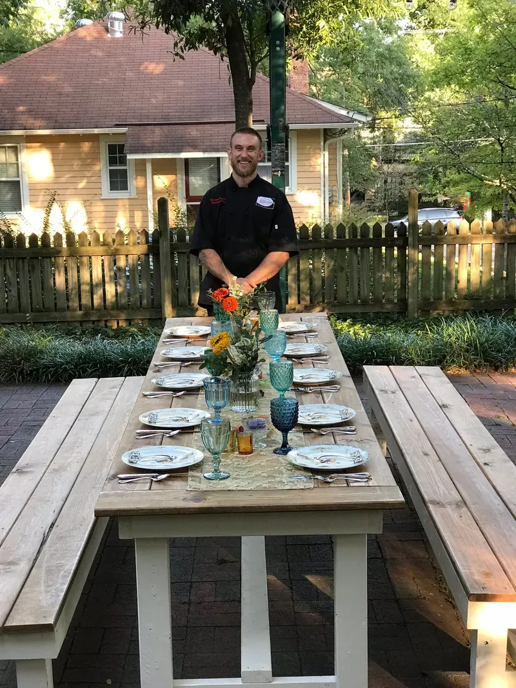

Order by Saturday at 8 PM · Delivered Tuesday · Raleigh, Cary, Morrisville, Research Triangle Park (RTP) and Knightdale
Executive Chef & Owner · Raleigh, NCChef Michael Saunders of Just One More Bite
Chef Michael Saunders is the executive chef and owner of Just One More Bite (JOMB), a weekly chef-made meal delivery service in Raleigh, North Carolina. Trained in classic and contemporary technique, he spent 20+ years in professional kitchens, including Executive Sous Chef at Morton's The Steakhouse in Dallas and Executive Chef at The Ore House in Steamboat Springs, Colorado, and at Oryx in Raleigh.
Today he writes a new Zone, Paleo, Low-Carb Dairy-Free and Family menu every week, cooks it from scratch in our Raleigh kitchen, and delivers it every Tuesday.
Morton's The SteakhouseExecutive Sous Chef · Dallas, TX
The Ore HouseExecutive Chef · Steamboat Springs, CO
OryxExecutive Chef · Raleigh, NC
The résumé
Three restaurant kitchens. Then yours.
Classic and contemporary training, and 20+ years across fine dining, country clubs and high-volume casual restaurants. These are the kitchens behind him.
Dallas, TX
Morton's The Steakhouse
Executive Sous Chef. The number-two job in a steakhouse kitchen, where every steak has to hit its temperature, every night.
Steamboat Springs, CO
The Ore House
Executive Chef. Running the whole kitchen at a steakhouse in a Colorado mountain town.
Raleigh, NC
Oryx
Executive Chef. Leading a Raleigh restaurant kitchen and putting down roots in the Triangle.
Raleigh, NC · today
Just One More Bite
Executive Chef & Owner. A new menu every week, cooked from scratch and delivered every Tuesday.
20+ yrsin professional kitchens
3restaurant kitchens on his résumé: Dallas, Steamboat Springs, Raleigh
4menus written fresh every week
5Triangle towns on the Tuesday delivery
The philosophy
Restaurant food belongs at your table.
After years on restaurant lines, Chef Mike believes something simple: food is enjoyed more in the comfort of your own home. Just One More Bite is built on that. The goal, in his words, is gourmet, fresh, healthy, quality meals that a family can enjoy without the hassle of shopping, preparing and cooking them.
So the steakhouse standards came with him. Every dish is made from scratch, with USDA Choice meats and local, fresh ingredients when possible. The menu is rewritten every week, so you're never stuck in a rotation, and every plan is cooked exactly as listed, with no substitutions, so each plate tastes the way he designed it.
Three of the greatest things in life are good food, good drinks and good company. Just One More Bite will provide the first. It's up to you to provide the rest.
Chef Michael Saunders
USDA Choice steaks on the grill
House vinaigrette, made and labeled by hand
Who he cooks for
Athletes, families, and a 93-year-old.
The menus are written for real people with real goals. Jonathan A., a Morrisville CrossFit gym owner and a competitive lightweight strongman, has eaten Chef Mike's food for performance for five years. Anna M. and her husband have ordered since JOMB's early days, so they can sit down together after the kids are in bed instead of cooking.
When Rebecca W.'s son Ben wanted to lose weight, Chef Mike sat down with him, talked through his likes and dislikes, and built a menu he loved. Ben lost close to 40 pounds over about six months.* And when Sandi F.'s 93-year-old mother came home from the hospital needing a new diet, JOMB cooked and delivered a weekly no-sugar, no-gluten meal plan.
*Individual results vary. JOMB meals support your goals; they aren't medical treatment.
Two people who have seen Chef Mike work up close: a fellow executive chef, and the president of a Raleigh food company he has cooked events with.
I have worked with Michael Saunders in both kitchens and private catering events. His skills and passion for what he does is something that we miss here at the restaurant. He is an asset to any company.
Steve Z.Executive Chef, Jimmy V's Steak House & Tavern
He absolutely knows fine dining culinary skills and works well under pressure. I have been impressed with his punctuality, his integrity and his demanding ServSafe food handling standards. His food is the highlight of the event.
Sandi F.President, Ford's Gourmet Foods / Bone Suckin' Sauce
Standards you can taste
Sandi F. calls out his punctuality, his integrity and his "demanding ServSafe food handling standards," in business and personal events alike. Every meal is cooked from scratch in our Raleigh kitchen, by the same chef, to the same standard.
Giving back in Raleigh
Just One More Bite has co-sponsored Adventure for Special Needs (AFSN), a yearly children's charity fundraiser held in Raleigh, alongside Ford's Gourmet Foods / Bone Suckin' Sauce. In Sandi F.'s words, his food is the highlight of the event.
Chef Mike at work
Plates, platters and long tables.

Finishing plates of glazed salmon

A long table set for a private dinnerChef Mike at a JOMB event
Chef Michael Saunders is the executive chef and owner of Just One More Bite (JOMB), a weekly chef-made meal delivery service in Raleigh, North Carolina. He has 20+ years in professional kitchens, including Executive Sous Chef at Morton's The Steakhouse in Dallas, Executive Chef at The Ore House in Steamboat Springs, Colorado, and Executive Chef at Oryx in Raleigh.
What is Chef Mike's background?
He trained in classic and contemporary cooking technique and has cooked in fine dining, country clubs and high-volume casual restaurants. He ran steakhouse kitchens in Dallas and Steamboat Springs before leading the kitchen at Oryx in Raleigh and starting Just One More Bite.
Does Chef Mike cook the meals himself?
Yes. Chef Mike writes every weekly menu and cooks everything from scratch in Raleigh, with USDA Choice meats and local, fresh ingredients when possible.
Can I hire Chef Mike for a private dinner or an event?
Call (919) 443-5408 or email jomborders@gmail.com. Questions about an order, an allergy or an event go straight to Chef Mike and JOMB, not a call center.

 USDA Choice steaks on the grill
USDA Choice steaks on the grill